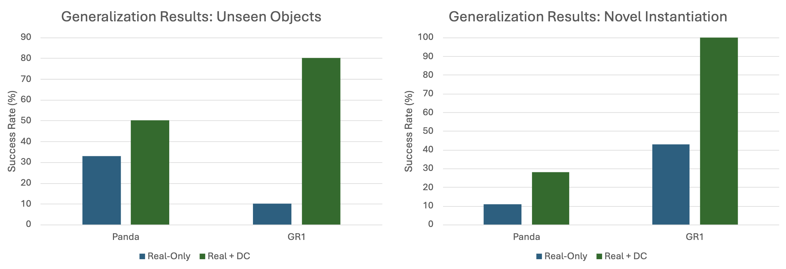

Creating a perfect digital twin copy of the real-world task is challenging, requiring extensive manual tuning, system identification, and sourcing identical 3D assets. Instead, we opt to create task-aware digital cousins, i.e., tasks in simulation that share the same task semantics but may have discrepancies in visual and physical features.
Creating digital cousin still requires extra effort. So we also explore using prior task-agnostic simulation datasets. We define a prior task-agnostic simulation dataset as any simulation dataset that existed before the creation of the downstream, real-world task. These datasets may have numerous discrepancies with real-world data, but present a very simple and convenient way to leverage simulation data.
We establish a systematic study for co-training on real-robot data and synthetically generated data from simulation, resulting in a simple recipe to leverage synthetic simulation data for real-world manipulation:
• Task and scene composition. Use task-aware digital cousins with similar task and scene compositions to real-world tasks. Multi-task prior simulation data can still help even with different compositions.
• Object composition and initialization. Incorporate diverse objects and varying placements in simulation to improve generalization.
• Task-aware digital cousin alignment. Ensure simulation tasks share the same definition and success criteria as real-world tasks. Similar camera viewpoints help, but perfect alignment isn't necessary.
• Co-training hyperparameters. Use significantly more simulation data than real-world data and carefully tune the co-training ratio.
Sim-and-Real Co-training Pipeline. Left: We start with a real-world task in mind and some prior simulation data. Middle: Given real-world tasks and prior simulation data, we can build additional digital cousin tasks that share semantic similarities with their real-world counterparts but may still have discrepancies in visual and physical features. From here we can consolidate prior simulation data, digital cousin data, and real world data. Right: We co-train on a mixture of real-world and simulation data. We sample simulation data according to a sampling ratio of α, and as we show in experiments, this sample ratio is crucial. After training the policy, we deploy the resulting policy directly in the real world.
Trained on Real-Only Data
Success Rate: 31%
Trained on Real + Task-Aware Digital Cousin
Success Rate: 71%
Trained on Real + Prior Simulation Data
Success Rate: 69%
Trained on Real + Prior Simulation Data + Task-Aware Digital Cousin
Success Rate: 76%
We use 4000 simulation demos and increase the number of real demos from 40 to 400 on task MultiTaskPnP. The results show that our co-training recipe remains beneficial in data-rich settings.
Cup PnP
Milk Box PnP
Pour
Bimanual Cube PnP
Quantitatively, sim-and-real co-training boosts policy performance by 37.9% on average across 6 tasks on 2 embodiments:
Co-training with simulation data can help policy generalize to novel object entities and poses unseen in the real-world dataset.
Unseen Object
Real-Only Policy (33%)
Co-Training Policy (50%)
Real-Only Policy (10%)
Co-Training Policy (80%)
Novel Object Position
Real-Only Policy (11%)
Co-Training Policy (28%)
Real-Only Policy (43%)
Co-Training Policy (100%)
Novel Object Color
Co-Training Policy (100%)
Our findings help practitioners effectively leverage synthetic simulation data for real-world robotics tasks.
Co-Training Ratio
Effect of the different co-training ratios (α). We experiment on CupPnP task with 20 real demos and 1000 simulation demos from task-aware digital cousins. Tuning the co-training ratio is important for good performance of co-trained policies.
Camera Alignment
Given our observation that incorporating task-aware digital cousins, such as camera viewpoint alignment, enhances performance, we pose a follow-up question: Would improving visual fidelity by making simulation rendering closer to reality enhance co-training?
We fine-tune CogVideoX (Yang et al., 2024), a video diffusion model, on CupPnP real demonstration videos in the Text2Video (T2V) modality. To adapt the model for style transfer on simulation videos—preserving object positions while enhancing visual realism—we adopt a simple strategy: instead of generating videos from pure noise, we introduce noise into reference simulation videos and use them as initialization for video diffusion. Lower noise levels retain more of the original simulation textures, producing outputs closer to the inputs, while higher noise levels result in more realistic appearances but may distort object poses.
We find that Vid2Vid-enhanced visual fidelity leads to a 5-10% average improvement in policy performance, with the most significant benefits occurring when the number of simulation or real-world trajectories is low.
We also explore an alternative strategy, where instead of using the RGB simulation video as noised input for T2V, we use the depth or segmentation video as the intermediate modality, where they are used as a conditioning for Video-to-Video (V2V) diffusion. This reduces the requirement of visual fidelity of the simulation videos, and we believe it opens up exciting opportunities for future research.
@inproceedings{maddukuri2025simandreal,
title = {Sim-and-Real Co-Training: A Simple Recipe for Vision-Based Robotic Manipulation},
author = {Maddukuri, Abhiram and Jiang, Zhenyu and Chen, Lawrence Yunliang and Nasiriany, Soroush and Xie, Yuqi and Fang, Yu and Huang, Wenqi and Wang, Zu and Xu, Zhenjia and Chernyadev, Nikita and Reed, Scott and Goldberg, Ken and Mandlekar, Ajay and Fan, Linxi and Zhu, Yuke},
booktitle = {Proceedings of Robotics: Science and Systems (RSS)},
address = {Los Angeles, CA, USA},
year = {2025}
}If you have any questions, please feel free to contact Zhenyu Jiang, Ajay Mandelkar, Jim Fan, and Yuke Zhu.